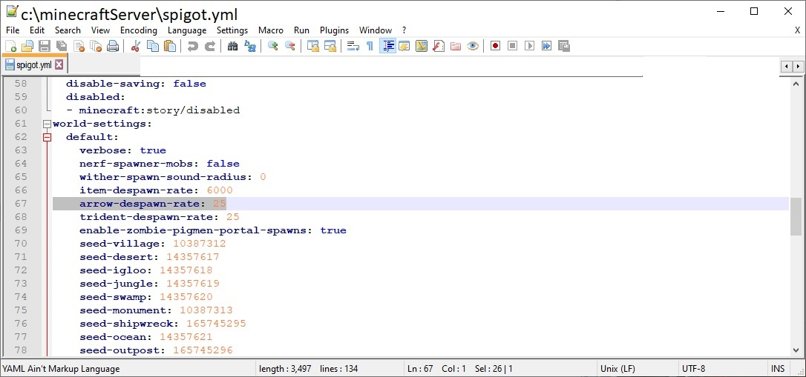

<H1>Arrow Despawn Rate</h1>
To reduce lag on your server, you can despawn arrows quicker by modifying the spigot.yml file<br>
This number indicates how many ticks (20 per second) the arrows will stick around in the world.<br>
<br>
<hr>
<center></center>